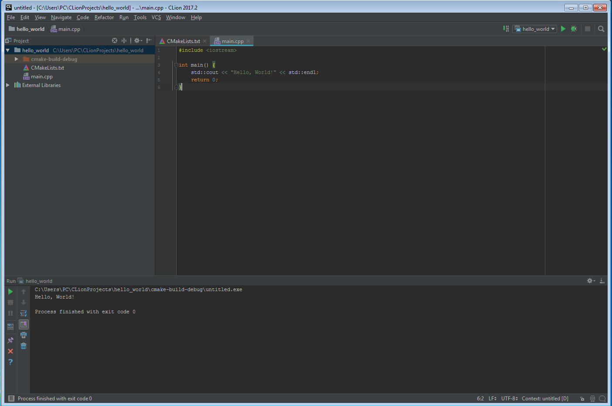

Get Started
What do I need to start with CLion?
In general to develop in C/C++ with CLion you need:
- CMake, 2.8.11+ (Check JetBrains guide for updates)
- GCC/G++/Clang (Linux) or
- MinGW 3. or MinGW — w64 3.-4. or Cygwin 1.7.32 (minimum required) up to 2.0. (Windows)
Downloading and Installing CMake
Downloading and installing CMake is pretty simple, just go to the website, download and install by following the recommended guide there or the on Desktop Wizard.
- Download and install file
cmake-3.9.0-win64-x65.msi
> cmake
Usage
cmake [options] <path-to-source>
cmake [options] <path-to-existing-build>
Specify a source directory to (re-)generate a build system for it in the
current working directory. Specify an existing build directory to
re-generate its build system.
Run 'cmake --help' for more information.
Downloading and Getting Cygwin
Cygwin is a large collection of GNU and Open Source tools which provide functionality similar to a Linux distribution on Windows
-
Download file
setup-x86_64.exefrom the website https://cygwin.com/install.html -
Install
setup-x86_64.exefile

This is the root directory where Cygwin will be located, usually the recommended C:\ works

Choose where to install LOCAL DOWNLOAD PACKAGES: This is not the same as root directory, but rather where packages (ie. extra C libraries and tools) you download using Cygwin will be located

Follow the recommended instructions until you get to packages screen:

Once you get to the packages screen, this is where you customize what libraries or tools you will install. From here on I followed the above guide but here’s the gist:
From this window, choose the Cygwin applications to install. For our purposes, you will select certain GNU C/C++ packages.
Click the + sign next to the Devel category to expand it.
You will see a long list of possible packages that can be downloaded. Scroll the list to see more packages.
Pick each of the following packages by clicking its corresponding “Skip” marker.
gcc-core: C compiler subpackagegcc-g++: C++ subpackagelibgcc1: C runtime librarygdb: The GNU Debuggermake: The GNU version of the ‘make’ utilitylibmpfr4: A library for multiple-precision floating-point arithmetic with exact rounding
Download and install CLion
Download file CLion-2017.2.exe from website https://www.jetbrains.com/clion/download/#section=windows

Config environment File > Settings... > Build, Execution, Deployment
- Choose
Cygwin home:C:\cygwin64 - Choose
CMake executable:Bundled CMake 3.8.2
Run your first C++ program with CLion
